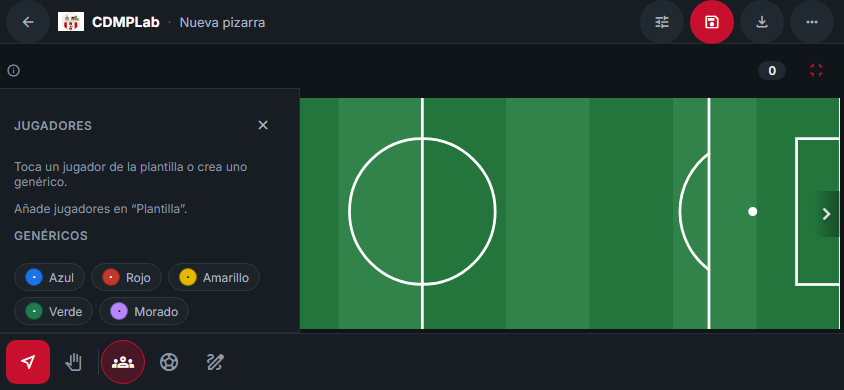
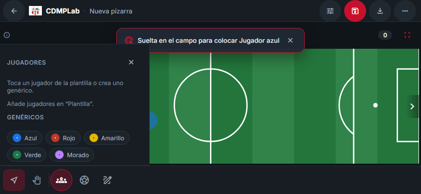
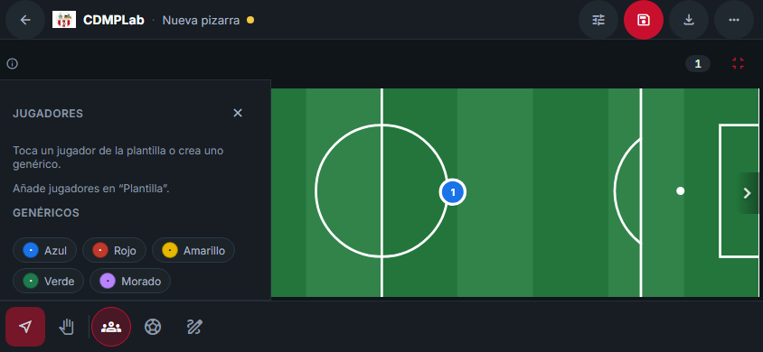
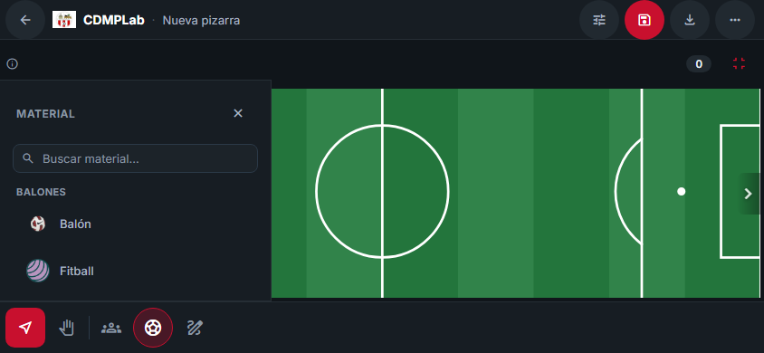
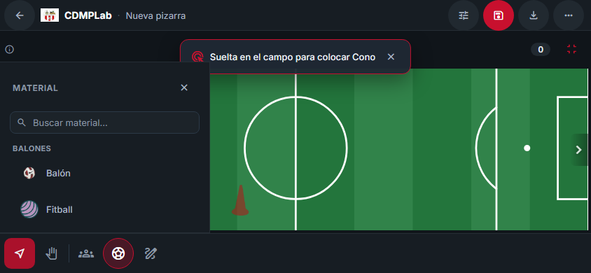

Móvil horizontal (844×390). Un arrastre táctil del panel al campo coloca exactamente UNA
unidad y desarma la herramienta (Cursor). Un toque posterior no coloca otra.

jugador-antes.png — Jugador genérico — ANTES del arrastre: panel Jugadores abierto, barra inferior visible, campo vacío (herramienta Cursor).

jugador-durante.png — Jugador genérico — DURANTE el arrastre táctil: la pista dice «Suelta en el campo para colocar…» y la preview acompaña al puntero.

jugador-despues.png — Jugador genérico — DESPUÉS del drop: una sola unidad colocada, la herramienta desarmada vuelve a Cursor y el panel permanece abierto.

cono-antes.png — Material (Cono) — ANTES del arrastre: panel Material abierto, barra inferior visible, campo vacío.

cono-durante.png — Material (Cono) — DURANTE el arrastre táctil: pista «Suelta en el campo para colocar…» y preview junto al puntero.cono-despues-panel-barra.png — Material (Cono) — DESPUÉS del drop: una sola unidad colocada, la herramienta vuelve a Cursor, el panel sigue abierto y la barra inferior visible.